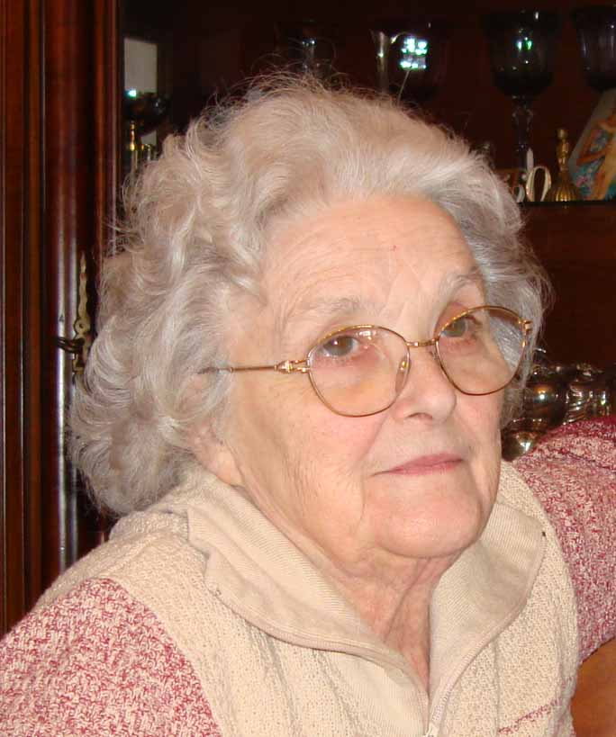
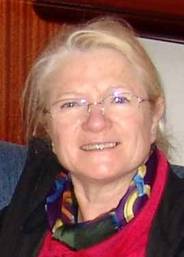

Toutes ces personnes citées ci-dessous sont dans ma GENEALOGIE
et sont mes cousin(e)s ... de près ou de loin !
C'est en partie grâce à vous, cousines et cousins, que j'ai pu affiner mes recherches ... et celles-ci ne sont pas terminées :-)
Voici quelques premières réflexions qui vous permettront peut-être de mieux nous situer les un(e)s par rapport aux autres !IMPORTANT : Si certaines informations se trouvent erronées, n'hésitez pas à m'en faire part !
... de même si vous n'êtes pas satisfait(e)s de ma littérature !
. Première cousine découverte sur le net : Caroline MULTNER (née CRAIPEAU)
et sa maman
Nous sommes cousine et cousin par la 4ème génération (Je ne sais pas si c'est comme cela qu'on dit ?)
En fait sa maman Marie Claire, de la même génération que moi, est ma cousine par la 3ème génération.
Notre ancêtre commun le plus proche est MORLET François né le 8 Juillet 1811 à Châlons-sur-Marne et marié à NOURISSIER Marie Joséphine.
Les ascendants directs de Caroline dans la branche des MORLET sont :
. sa maman MORLET Marie Claire, puis en remontant :
. MORLET Maxime Félicien,
. MORLET Jean Baptiste Jules et
. MORLET François.MORLET François a eu, entre autres, 2 fils : Grégoire né le 6 Août 1841 et donc Jean Baptiste né le 7 Juillet 1853.
C'est Grégoire qui a donné naissance à ma branche :
. MORLET Charles Constant,
. MORLET Raymond (mon papa) et
. MORLET Daniel (moi-même)
. Daniel ROBILLART est le 1er cousin retrouvé sur le net
Daniel ROBILLART est le cousin par la 3ème génération de ma maman Geneviève ROBILLART
Notre ancêtre commun le plus proche, à Daniel et moi, est ROBILLART Constant Amand Fidèle né le 26 Août 1847 à Souchez (Pas-de-Calais) et marié à CHOQUET Zoé Eugénie.
Les ascendants directs de Daniel, dans la branche des ROBILLART sont :
. son papa ROBILLART François Gustave, puis en remontant :
. ROBILLART François Louis Joseph et
. ROBILLART Constant Amand Fidèle.ROBILLART Constant Amand Fidèle a eu, entre autres, 2 fils : Constant né en 1869 et donc François Louis Joseph né le 5 Juillet 1887.
C'est Constant qui a donné naissance à ma branche :
. ROBILLART Constant,
. ROBILLART Gustave (mon grand-père),
. ROBILLART Geneviève (ma maman).
. Seconde cousine retrouvée sur le Net : Anne-Marie JACQUIER
Anne-Marie et moi sommes cousine et cousin par la 5ème génération
Notre ancêtre commun le plus proche est LAURENT François né le 1er Février 1798 à Saint-Jean-Devant-Possesse (51) et marié à PIGNY Marie Victoire.
... pour moi cela remonte la branche du coté de ma grand-mère paternelle
Les ascendants directs d'Anne-Marie sont donc :
. son papa JACQUIER Fernand Henri, puis en remontant,
. JACQUIER Paulin Alexandre, son grand-père paternel d'Anne-Marie,
. LAURENT Julie Anaïs, la mère de Paulin Alexandre,
. LAURENT Jean Grégoire, le père de Julie Anaïs, et
. LAURENT François marié à PIGNY Marie Victoire.
Ce couple a donné également naissance à LAURENT Marie Anne Sidonie (soeur de Jean Grégoire).
Marie Anne Sidonie se marie avec JACTAT Arsène.
C'est Arsène qui a donné naissance à ma branche :
. JACTAT Marie Anaïs Emilie (sa fille) qui, mariée avec MARTIN Victor Napoléon Raphaël, a donné naissance à :
. MARTIN Marie Léontine Paulette Véronique (ma grand-mère) qui, mariée avec MORLET Charles Constant, a donné naissance à :
. MORLET Raymond (mon père) et
. MORLET Daniel (moi-même)
Dans tous les cas cette branche concernant JACTAT est à rapprocher de la branche de Danièle CHRETIEN
(Voir, ci-dessous une autre cousine découverte sur le net : Danièle CHRETIEN)
. Troisième cousine découverte sur le net : Danièle CHRETIEN

Danièle CHRETIEN (née JACTAT) et moi sommes cousine et cousin par la 4ème génération
Notre ancêtre commun le plus proche, à Danièle et moi, est JACTAT Pierre né le 29 Août 1789 à Herpont (51) et marié à MARTIN Marie Adélaïde.
... coté branche de ma grand-mère paternelle
Les ascendants directs de Danièle, dans la branche des JACTAT sont :
. son papa JACTAT Jean, puis en remontant :
. JACTAT Georges Anatole,
. JACTAT Jules Adolphe,
. JACTAT Joseph Victor et
. JACTAT PierreJACTAT Pierre a eu, avec son épouse MARTIN Marie Adélaïde, au moins 2 garçons : Joseph Victor né le 24 Novembre 1817 et Arsène né le 3 Juin 1820.
C'est Arsène qui a donné naissance à ma branche :
. JACTAT Marie Anaïs Emilie qui, mariée avec MARTIN Victor Napoléon Raphaël, a donné naissance à :
. MARTIN Marie Léontine Paulette Véronique (ma grand-mère) qui, mariée avec MORLET Charles Constant, a donné naissance à :
. MORLET Raymond (mon papa) et
. MORLET Daniel (moi-même)
. Une cousine découverte grâce à MyHeritage : Nadège NORMAND
En ce qui concerne Nadège NORMAND et moi, notre ancêtre commun le plus proche est NORMAND Adrien Joseph né le 3 Juin 1817 à Haynecourt (59) et marié à BOQUET Augustine Jeanne Marie née le 3 Juin 1817 également à Haynecourt.
Les ascendants directs de Nadège, dans la branche des NORMAND sont :
. son papaNORMAND Dominique, puis en remontant :
. DEBAENE Eliane Rosa Léone la mère de Dominique,
. NORMAND Clotilde Louise la mère de Eliane Rosa Léone,
. NORMAND Oza Joseph le père de Clotilde Louise,
. NORMAND Elie Joseph le père de Oza Joseph et enfin
. NORMAND Adrien JosephNORMAND Adrien Joseph a eu, avec son épouse BOQUET Augustine Jeanne Marie, au moins 2 garçons : Bélonie Joseph né le 5 Mai 1839 et Elie Joseph né le 25 Mars 1841.
C'est Bélonie Joseph qui a donné naissance à ma branche :
. NORMAND Julie Marie Joseph (fille de Bélonie Joseph et mère de mon grand-père maternel)
. ROBILLART Gustave (mon grand-père maternel)
. ROBLLART Geneviève (ma maman) et
. MORLET Daniel (moi-même)
. Deuxième cousin découvert sur le net : Thierry Christophe MARTIN
Celui-ci est mon cousin par la 6ème génération
Notre ancêtre commun le plus proche est ROBILLART Jacques Antoine Joseph marié à GUILBERT Ambroisine ElisabethThierry est aussi le cousin de Daniel ROBILLART (voir plus haut) dans la même branche.
En fait Marie Jeanne (la maman de Thierry) et Daniel ROBILLART sont cousin(e)s par la 5ème génération
Les ascendants directs de Thierry sont :
. sa maman Marie Jeanne ROBILLART, puis
. ROBILLART René son grand-père maternel,
. ROBILLART Henri Joseph,
. ROBILLART Amédée Louis Joseph,
. ROBILLART Antoine Joseph,
. ROBILLART Jacques Antoine Joseph marié à GUILBERT Ambroisine ElisabethCe couple a eu au moins 2 enfants : ROBILLART Antoine Joseph et ROBILLART Césarine
ROBILLART Antoine Joseph a donné la branche de Thierry Christophe MARTIN !
ROBILLART Césarine a donné ma branche :
. ROBILLART Constant Amand Fidèle,
. ROBILLART Constant,
. ROBILLART Gustave (mon grand-père),
. ROBILLART Geneviève (ma maman) et
. MORLET Daniel (moi-même)
. Autre cousine découverte sur le net : Michèle Arlette ROBILLARD
Comme le dit Michèle : "... le nom s'est transformé au gré des employés de mairie : ROBILLIART, ROBILLART, ROBILLARD."
Michèle est donc ma cousine par la 6ème génération
Notre ancêtre commun le plus proche est ROBILLARD Jacques Antoine Joseph marié en premières noces à JOLY GenevièveMichèle est aussi la cousine de Thierry et de Daniel ROBILLART (voir plus haut).
Les ascendants directs de Michèle sont :
. son papa Julien ROBILLARD, puis
. ROBILLARD Fromentel François Joseph son grand-père,
. ROBILLARD Constant Antoine Joseph,
. ROBILLARD Constant Joseph,
. ROBILLARD Jacques Antoine Joseph marié à JOLY GenevièveCe couple a eu au moins 2 enfants : ROBILLARD Florine Augustine et ROBILLARD Constant Joseph
ROBILLARD Constant Joseph a donné la branche de Michèle ROBILLARD !
ROBILLART(D) Jacques Antoine Joseph marié en troisième noces à GUILBERT Ambroisine Elisabeth a donné ma branche :
. ROBILLART Césarine,
. ROBILLART Constant Amand Fidèle,
. ROBILLART Constant,
. ROBILLART Gustave (mon grand-père),
. ROBILLART Geneviève (ma maman) et
. MORLET Daniel (moi-même)
A suivre ...